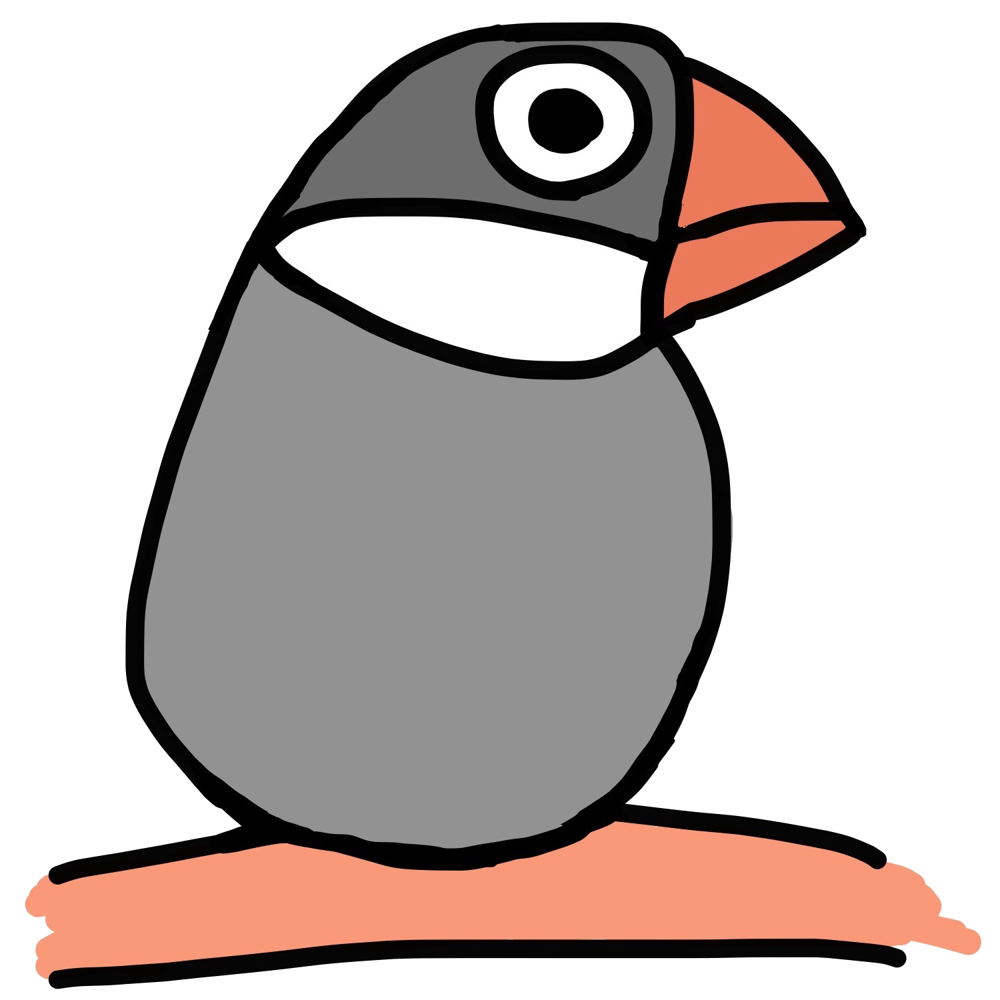

Atsushi Morimoto (@74th)


My Profile was removed to github.com/74th.
活動ログは github.com/74th に移しました。
自作キーボードキットや電子工作キットを販売する Booth Shop『74th Books & Gadgets』
ブログ「@74th の制作ログ」 https://74th.hateblo.jp/
このページに残っているのは、過去のコンテンツ類です。
my favorites
about me
Atsushi Morimoto (@74th)
Software Engineer ♡  VSCode,
VSCode,  Kubernetes,
Kubernetes,  Go,
Go,  Python
Python
- site@74th.tech
- Twitter @74th
- blog IT は遊び
- github 74th
- dockerhub 74th
- Speaker Deck 74th
- Qiita 74th
- slideshare 74th
- dotfiles github.com/74th/dotfiles
old contents
hobby works
- 2018 Linux 用 IntelCPU 拡張命令をサーポートする Tensorflow をビルドする
- 2015-2017 dockernized Redmine all in one -SVN, Git ホスティング、アジャイルプラグイン入りの Redmine 簡単構築
- 2017 MacOS 用 NVIDIA GPU(CUDA)をサポートする Tensorflow パッケージ
- 2017 IT は遊び はてなブログ（更新してない）
- docker について Slideshare
- Docker にホームディレクトリをマウントしちゃおう - IT は遊び
- docker は求めていたものを全て提供してくれた - IT は遊び
- flying whaleあらゆるパッケージマネージャーを、あらゆる環境で使えるように
- Vim チートシート: Vim1 年目の頃に作ったチートシート
my favorites
novels
- 02.2007 魔法使いの彼女と僕 : 彼女が魔法使いだと告白した夜(短編／一番の自信作)
- 06.2007 旅行にて : 妹が女として可愛くなっていく／姉の私はどうなのか（短編）
- 12.2006 恋をするのも面倒で恋をするのも面倒で（長編／自分の好きなものを書いたけどうまくない）
- その他の作品はこちら